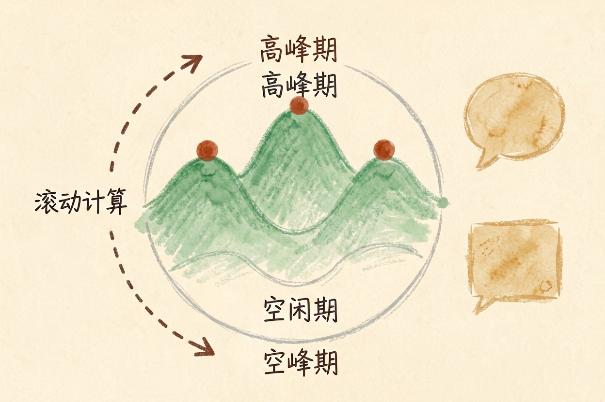

Claude 免费版够用吗？额度限制说清楚
用免费版先想清楚一件事：它不是功能残缺，是限次数。轻度当帮手够用，当主力就要算升级账了。
Claude 免费版够用吗？结论：轻度够用，重度必撞墙
Claude 免费版够用吗？答案取决于你把它当偶尔帮手，还是主力工作台。功能上免费版其实很完整。卡的只有用量。一天用几次以内，免费版撑得住。当主力天天用，撞上限是迟早的事。所以结论分两半：轻度使用够用，重度使用必然撞墙。撞墙是常态，不是 bug。先把这一点接受下来，后面的建议才听得进去。判断标准也很简单。问问自己最近一周，有多少次被「额度用完」挡在门外。
免费版能用什么

免费版开放了核心对话、写代码、读长文档、Artifacts 输出这些基础能力。日常查资料、改文案、看代码都够。联网搜索也有。官方定价页把它列在免费档里。真正要付费的是旗舰模型和高阶功能。比如更强的推理、更长的输出。换句话说，免费版只是用量受限。功能基本都在。别因为一次对话不够长，就误以为它能力不行。
额度到底怎么算
免费版采用滚动时段的消息上限。不是每天清零的固定条数。高峰期官方会动态收紧，用的人多时额度更紧张。长对话和上传文件更耗额度。一次深度对话可能顶好几次简单问答。官方不公布精确数字，以官网当前说明为准。理解这三点，就不会因为「昨天还能用今天撞墙」而困惑。额度是动态的。撞墙不代表你做错了什么。想要稳定，把重要任务安排在非高峰时段。
撞到上限怎么办
换个时段再试。避开高峰期通常能恢复。新开一个对话，比在超长对话里硬挤更省额度。提示词写短、问题拆细，也能减少消耗。如果只是偶尔用，国内能直接打开的中文 AI完全可以当补充。豆包、Kimi、通义千问免费额度更慷慨。日常任务并不输。把免费 AI 工具推荐那篇翻一遍，能找到更省心的平替。也可以顺带看看 Gemini 免费版够不够用。三家免费档的取舍不完全一样。
什么时候才值得升付费
每天高强度用、需要旗舰模型推理、需要稳定访问不被打断。这三条占两条以上，才值得考虑付费。反过来，一周只用几次，付费纯属浪费。还有个前提：国内访问 Claude 本身有门槛。先解决访问，再谈付费。别买一个打不开的 Pro。公司或学校电脑，先确认允许用第三方 AI 服务。答案始终在你自己的使用频率里。把下面这段发给 Claude，让它帮你估算用量：
我在用 Claude 免费版，请根据我的用法给我一份省额度建议：
我的用法：【每周大约用几次、主要做什么、单次对话大概多长】
请告诉我：1) 免费额度大概够不够；2) 怎么调整使用习惯能多用几次；3) 什么信号出现时说明我该考虑付费。工具价格与免费额度可能变动，实际以各工具官网当前说明为准。 Claude 免费版够用吗？轻度够用，重度必撞墙，撞上限是常态，别把它当主力用。
本文信息核对于 2026-08-05。AI 产品的价格、免费额度与功能变动频繁，实际以各工具官网当前说明为准。